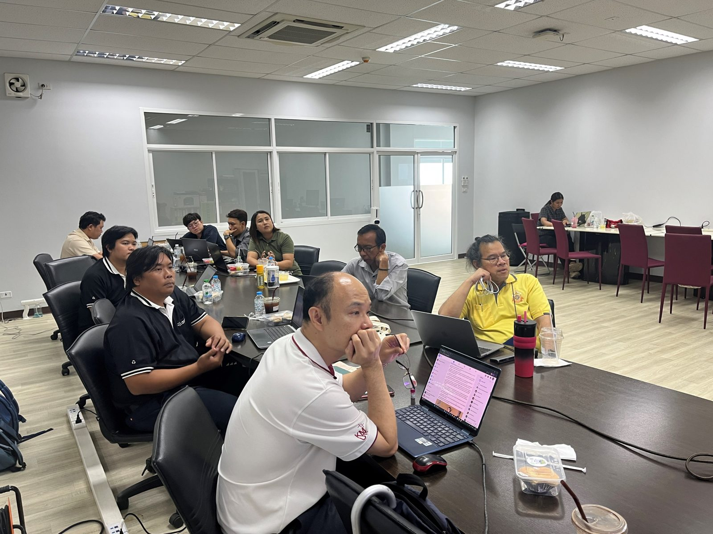

CISS นำปัญญาประดิษฐ์ยกระดับงานบำรุงรักษาโครงข่ายใยแก้วนำแสงของผู้ประกอบการไทย
แผนงานยกระดับธุรกิจภูมิภาค (Regional Entrepreneur Upgrade) ประจำปีงบประมาณ พ.ศ. 2568
ศูนย์ CISS มจธ. ·

การอบรมเชิงปฏิบัติการ ณ ศูนย์ CISS มจธ. 25 สิงหาคม 2568
ศูนย์การศึกษาด้านการสื่อสารและบริการครบวงจร (CISS) มหาวิทยาลัยเทคโนโลยีพระจอมเกล้าธนบุรี ดำเนินโครงการ “การเพิ่มสมรรถนะการบำรุงรักษาโครงข่ายสื่อสารด้วยปัญญาประดิษฐ์” ร่วมกับบริษัท พลัส วัน เน็ตเวิร์ค เอ็นจิเนียริ่ง จำกัด ภายใต้แผนงานยกระดับธุรกิจภูมิภาคของสำนักงานปลัดกระทรวงการอุดมศึกษา วิทยาศาสตร์ วิจัยและนวัตกรรม ปีงบประมาณ 2568 โดยมี ผศ.ดร.จิรศิลป์ จยาวรรณ เป็นหัวหน้าโครงการ และได้โปรแกรมต้นแบบสองโครงงานจากโจทย์จริงของบริษัท
โจทย์จากงานจริง
บริษัทให้บริการออกแบบ ติดตั้ง และบำรุงรักษาโครงข่ายโทรคมนาคม ความน่าเชื่อถือของโครงข่ายจึงเป็นหัวใจของบริการ การระดมความคิดร่วมกับบริษัทและเจ้าของโครงข่ายพบโจทย์สำคัญสามเรื่อง เรื่องแรกคือการระบุตำแหน่งจุดเสียของสายใยแก้วนำแสง เครื่องมือ OTDR ให้ค่าเป็นระยะของเคเบิล แต่ทีมภาคสนามต้องการตำแหน่งบนถนนเพื่อเข้าถึงจุดเสียได้เร็ว เรื่องที่สองคือการบันทึกข้อมูลหลังซ่อมที่ยังต้องใช้คนป้อน และเรื่องที่สามคือเหตุเสียบางประเภทเกิดซ้ำตามช่วงเวลาของปี ซึ่งคาดการณ์ล่วงหน้าได้หากมีข้อมูล
เรียนจากการทำงานจริง
โครงการใช้รูปแบบการเรียนรู้จากการทำงานจริง (On the Job Training) เริ่มจากการประชุมเปิดโครงการเมื่อ 24 เมษายน 2568 การระดมความคิดเพื่อจัดทำหลักสูตรเมื่อ 14 พฤษภาคม 2568 การสอนออนไลน์ และการอบรมเชิงปฏิบัติการเมื่อ 17 กรกฎาคม และ 25 สิงหาคม 2568 งานเรียงเป็นหกขั้น ตั้งแต่การจัดเตรียมข้อมูล การสอบทานกระบวนงาน การกำหนดรูปแบบข้อมูล การสอบทานข้อมูลย้อนหลัง การออกแบบระบบต้นแบบ ไปจนถึงการทดสอบและลงมือปฏิบัติ
ผลลัพธ์สองโครงงาน
โครงงานแรกคือการคำนวณหาพิกัดจุดเสียหาย โปรแกรมต้นแบบบน Microsoft Excel ใช้ชื่อหัวต่อ ระยะทาง และพิกัดจากข้อมูลจริง แปลงระยะที่วัดได้เป็นระยะจริง หาหัวต่อที่ใกล้ที่สุด และคำนวณพิกัดของจุดเสีย โดยเลือกสถานีต้นทางได้ทั้งสองด้านของเส้นทาง โครงงานที่สองคือการทำนายความเสียหายล่วงหน้า โปรแกรมต้นแบบสรุปประเภทความเสียหายที่พบมากที่สุดสามอันดับแรกตามพื้นที่และช่วงเวลาหกเดือน เพื่อใช้วางแผนบำรุงรักษาเชิงป้องกัน ผู้เข้าอบรมยังได้ทักษะการทำความสะอาดและจัดหมวดหมู่ข้อมูล ซึ่งเป็นขั้นแรกที่จำเป็นก่อนนำปัญญาประดิษฐ์มาใช้
ก้าวต่อไป
บริษัทอยู่ระหว่างเก็บข้อมูลในเส้นทางอื่นของโครงข่าย และมีแผนเก็บข้อมูลเหตุเสียให้ครบและเป็นปัจจุบัน ตั้งทีมรับผิดชอบข้อมูล และปรับกระบวนงานให้ข้อมูลอยู่ในรูปแบบดิจิทัลพร้อมใช้ รายงานระบุว่าการใช้แบบจำลองปัญญาประดิษฐ์ในอนาคตขึ้นกับความถูกต้องและจำนวนของชุดข้อมูล
ที่มา
- รายงานฉบับสมบูรณ์ แผนงานยกระดับธุรกิจภูมิภาค (Regional Entrepreneur Upgrade) ประจำปีงบประมาณ พ.ศ. 2568 ศูนย์ CISS มจธ.